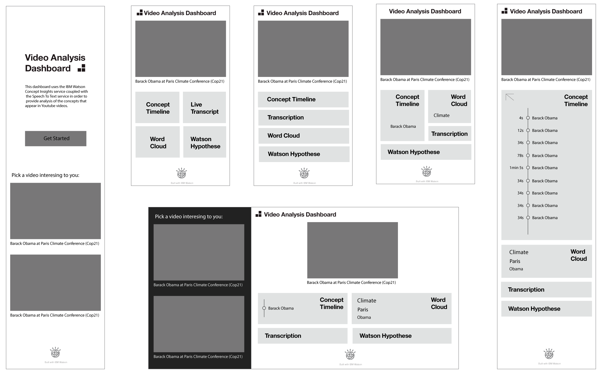
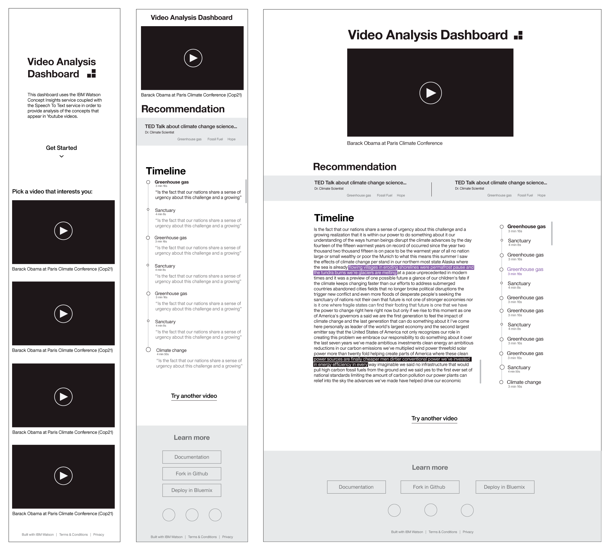

Audio Analysis Starter Kit
Overview
Starter Kit is designed to inspire developers how to combine multiple Watson services for common use cases and help them get a jumpstart building your cognitive app with code examples and documentation.
Audio Analysis Starter Kit combines speech to text and concept insights services, helping users real time analyzing the audio contents. My task is to design what audio analysis pattern would look like.
My role is UX designer and front-end developer. I partnered with a visual designer for this project.
Design
In the first several iterations, I was playing around tiles layout ideas to see how to make them responsive, and what callapsed and open state would look like.

Later on I was trying to design different scalable information graphics like timeline, word cloud to fit in different tiles.
In the end, I found that the users had a hard time understanding connections between different analysis - timeline, confidence, transcription and hypothses. So I regroup them into "real-time timeline generation" and "recommendation" to help user better understand the value of information in the context of audio analysis.

User Testing
We conducted some user testings with 12 developers. They were excited about the seeing the powerful insights from Watson services. However, they were eager to see the magic behind it as well. So I decided to add "how it works" session in the UI.
Another big finding coming out from user testing is users seeing a lot of things changing at the same time, which makes them hard to grapse and focus. So I decided to show "how it works", "timeline", "recommendation" one after another in the different stage of audio playing, instead of showing them all at once.
Ship
In this project, we were doing agile planning, daily scrum, and use github to track issues. It helped us a lot in terms of efficiency and communication. The project was released in two weeks after the design was done.